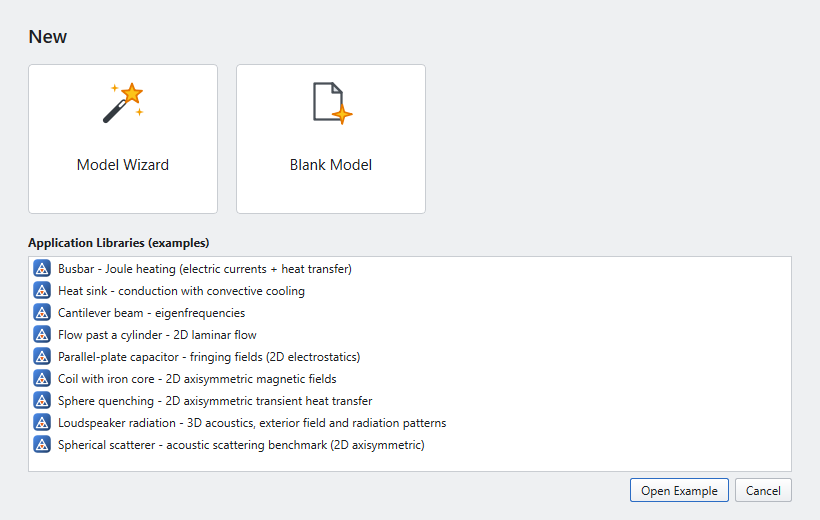
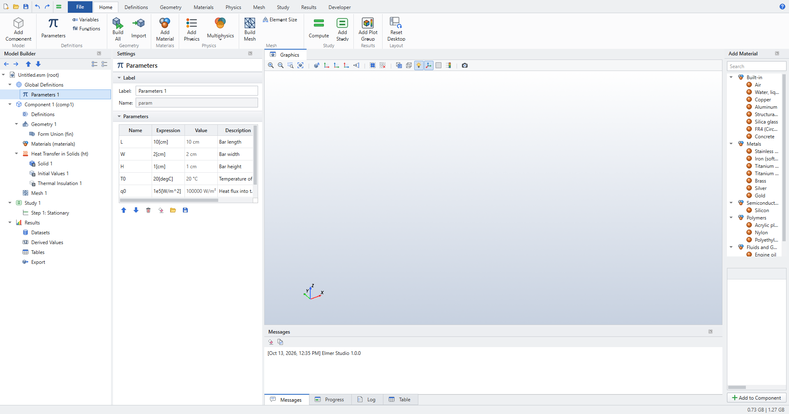
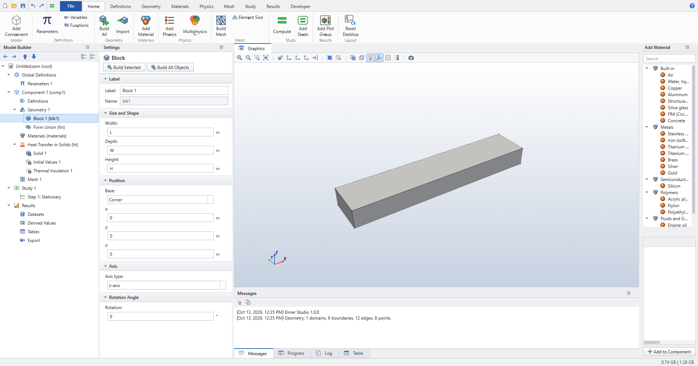
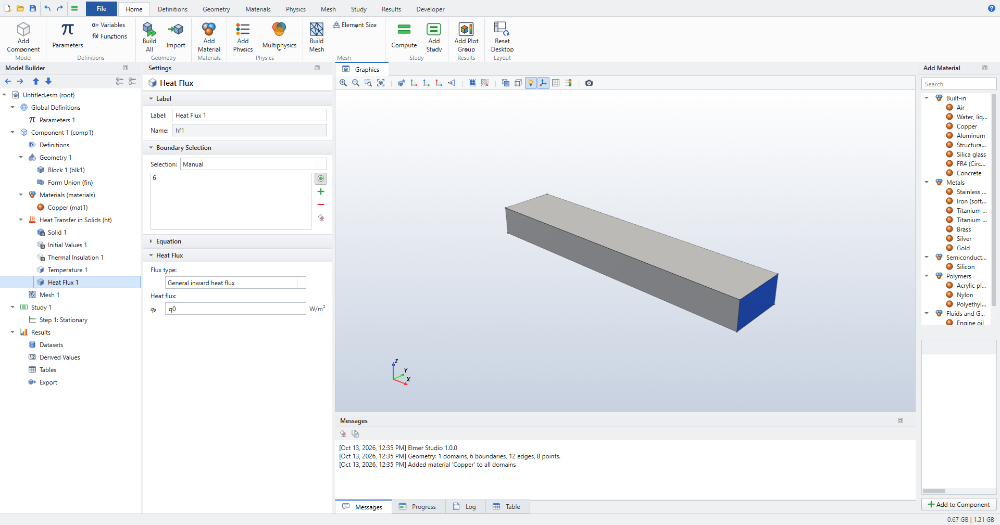
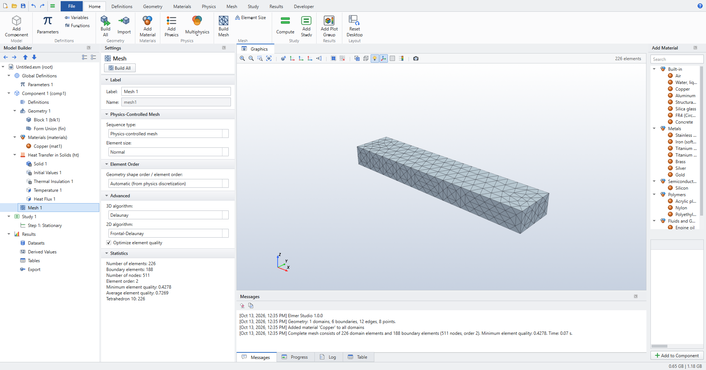
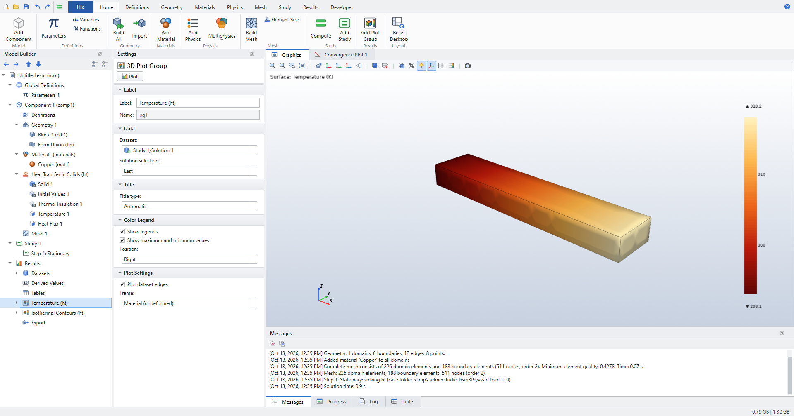
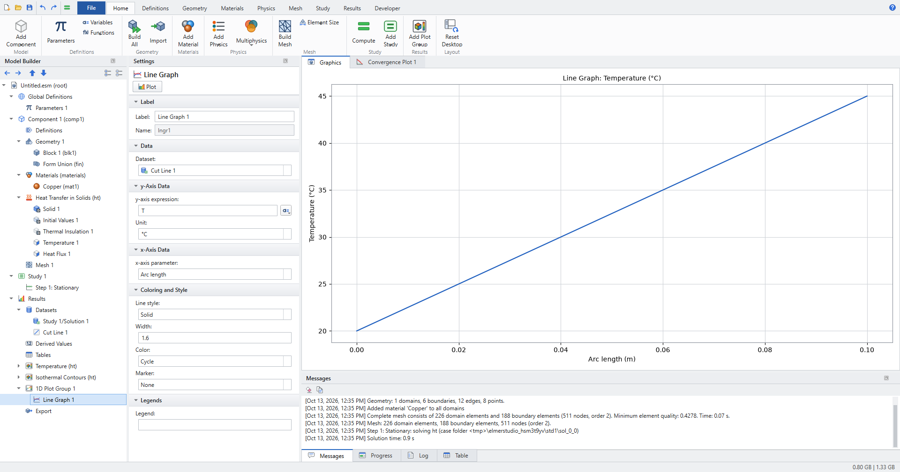
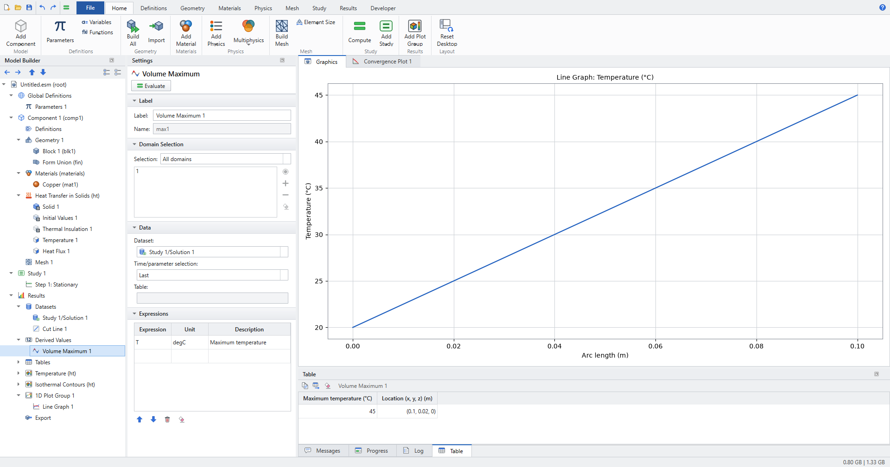

Quick start: your first model
In this tutorial you model a copper bar. One end is held at 20 °C, a heat flux of 100 kW/m² enters the other end, and all other faces are insulated. Heat flows along the bar, so the temperature rises linearly from the cold end to the hot end. The answer is easy to check by hand, so you can see that the whole chain works: geometry, material, physics, mesh, Elmer and post-processing.
-
Start a model with the Model Wizard.
-
Define parameters with units.
-
Create geometry and pick faces in the Graphics window.
-
Add a material and boundary conditions.
-
Mesh, solve, plot along a line, and evaluate a maximum.
Space dimension |
3D |
Physics |
Heat Transfer in Solids ( |
Study |
Stationary |
Solve time |
about 1 second (511 nodes) |
Expected result |
maximum temperature 45 °C at the hot end |
1. Create the model
-
Start Elmer Studio. The New window opens. (Later, use or Ctrl+N.)

Figure 1. The New window: Model Wizard, Blank Model or an Application Library example -
Click Model Wizard.
-
Under Select Space Dimension, click 3D.
-
Under Select Physics, expand Heat Transfer, select Heat Transfer in Solids (ht) and click Add. It appears under Added physics interfaces.
 Figure 2. Choosing the physics in the Model Wizard
Figure 2. Choosing the physics in the Model Wizard -
Click Study, select Stationary and click Done.
The Model Builder now holds an empty model with the usual nodes: Global Definitions, Component 1 (with Geometry 1, Materials, Heat Transfer in Solids, Mesh 1), Study 1 and Results. The Heat Transfer interface already contains its default features: Solid 1, Initial Values 1 and Thermal Insulation 1 on all exterior boundaries.
| COMSOL users will recognise every node. Coming from COMSOL lists the few differences. |
2. Parameters
Parameters keep the model easy to change. Values may carry units in square brackets. Elmer Studio converts everything to SI before Elmer sees it.
-
Click , or select Global Definitions › Parameters 1 in the Model Builder.
-
Type into the table (click an empty row to add a line):
Name Expression Description L10[cm]Bar length
W2[cm]Bar width
H1[cm]Bar height
T020[degC]Temperature of the cold end
q01e5[W/m^2]Heat flux into the hot end
The Value column shows each parameter’s evaluated value.

3. Geometry
-
Click (in the Primitives group). Block 1 appears under Geometry 1.
-
In the Settings window, under Size and Shape, enter Width
L, DepthWand HeightH. Leave the position at the origin. -
Click , or press F8.
The Graphics window shows the bar, 10 cm long in x. The Messages pane reports 1 domains, 6 boundaries, 12 edges, 8 points.

| F7 (Build Selected) builds the geometry up to the selected node, and F8 builds everything. Form Union at the end of the sequence is added for you. |
4. Material
-
Click . The Add Material window opens on the right.
-
Expand Built-in, select Copper and click Add to Component.
Copper appears under Materials and applies to all domains. Its Settings window has a Material Contents table. Each property the physics needs (here thermal conductivity, density and heat capacity) is marked as present. Copper’s thermal conductivity is 400 W/(m·K).

5. Boundary conditions
You select boundaries by clicking them in the Graphics window. Hover a face to highlight it in red; click to add it to the selection (blue). Click it again to remove it. See Selections for more.
Cold end: fixed temperature
-
In the Model Builder, right-click Heat Transfer in Solids and choose . Or use .
-
Click the end face at x = 0 (boundary 1, the small face on the left). Its number appears in the selection list.
-
Set Temperature T0 to
T0.

Hot end: heat flux
-
Right-click Heat Transfer in Solids and choose .
-
Rotate the view (drag with the left mouse button) until you see the far end of the bar, at x = L, and click it (boundary 6).
-
Keep Flux type General inward heat flux and set Heat flux q0 to
q0.

The four long faces keep the default Thermal Insulation. A later feature overrides an earlier one on the same boundary, as in COMSOL.
6. Mesh
-
Click .
The default mesh is physics-controlled with element size Normal: 226 quadratic tetrahedra and 511 nodes. The Messages pane reports the counts and the minimum element quality. Change the size with , or add your own Size and Free Tetrahedral nodes (see Mesh).

7. Solve
-
Click , or press Ctrl+=.
Elmer Studio writes the Elmer input files, runs ElmerSolver and loads the result. While it runs, the Progress pane and the Convergence Plot tab show its progress. When it is done, two default plot groups appear under Results: Temperature (ht) and Isothermal Contours (ht). The temperature plot opens.

8. Plot the temperature along the bar
-
Click (in the Datasets group). Cut Line 1 appears under Results › Datasets.
-
Enter Point 1: x
0, yW/2, zH/2; Point 2: xL, yW/2, zH/2. -
Click . It comes with a Line Graph 1.
-
Select Line Graph 1. Set Dataset to Cut Line 1, y-axis expression to
Tand Unit to °C. -
Click Plot at the top of the Settings window.

The graph is a straight line from 20 °C to 45 °C.
9. Evaluate the maximum
-
Click (in the Evaluation group).
-
In the Expressions table, enter
Twith unitdegC. -
Click Evaluate.
The Table pane shows the maximum, 45, and where it is: at x = 0.1 m, on the hot end.

10. Check the result
With insulated sides, all the heat q0 flows along the bar. Fourier’s law then gives a linear profile:
Elmer Studio’s answer is exactly this, because quadratic elements represent a linear field without error.
11. Save
Press Ctrl+S and choose a file name. The model is saved as an .esm file, together with its solution, so the plots are still there when you open it again.
Where next
-
Change a parameter (for example
q0), then press Ctrl+=. The geometry, mesh and solution update. -
Sweep it: right-click Study 1, add a Parametric Sweep over
q0, and plot the maximum temperature against it with a Global Evaluation. The Busbar tutorial shows how. -
See the Elmer input: shows the
.sifthat was generated. -
Learn the desktop in The desktop and Keyboard and mouse, or continue with the Tutorials.
tools/screenshot_docs.py in the source repository builds this exact model in the real GUI. It recreates these screenshots and checks the 45 °C.
|